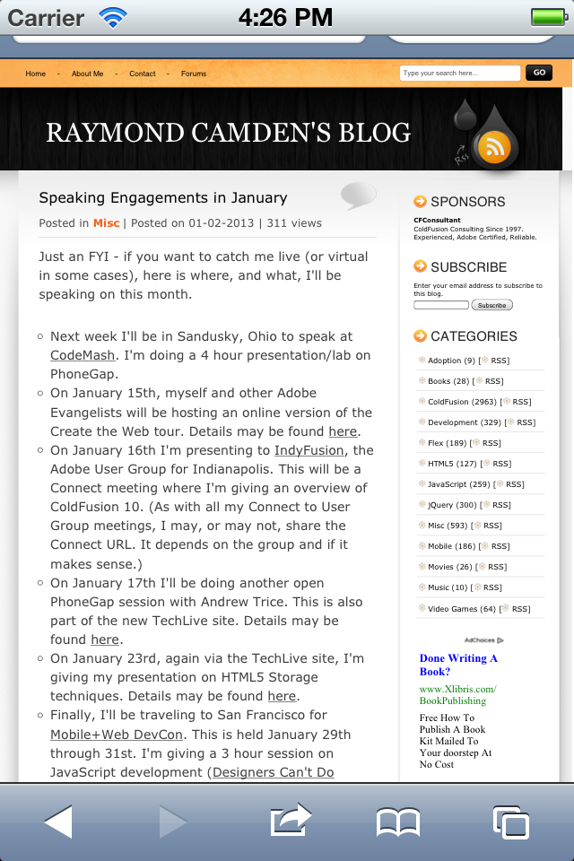
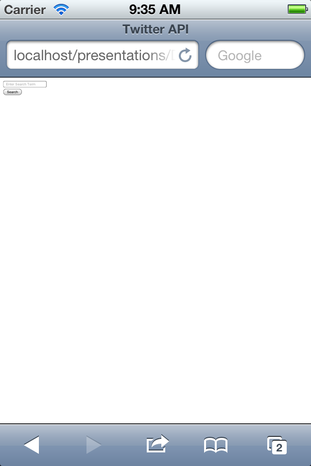
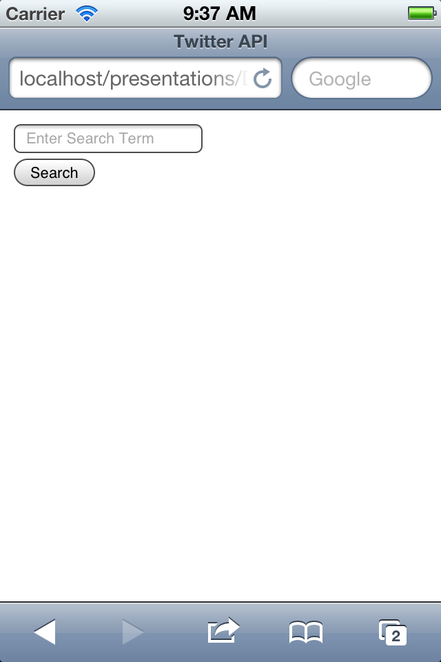
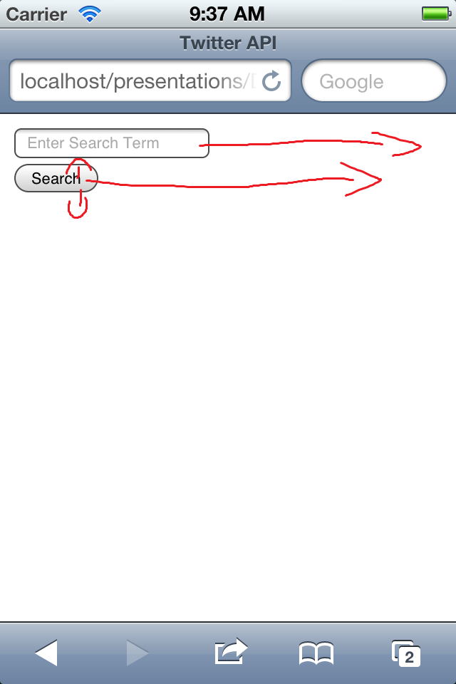
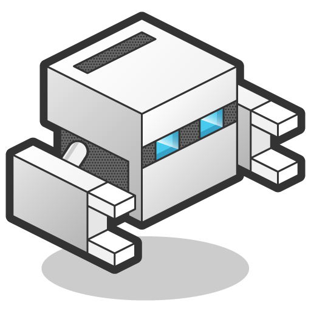
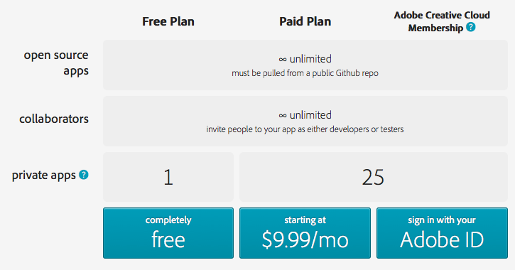
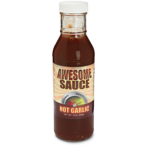
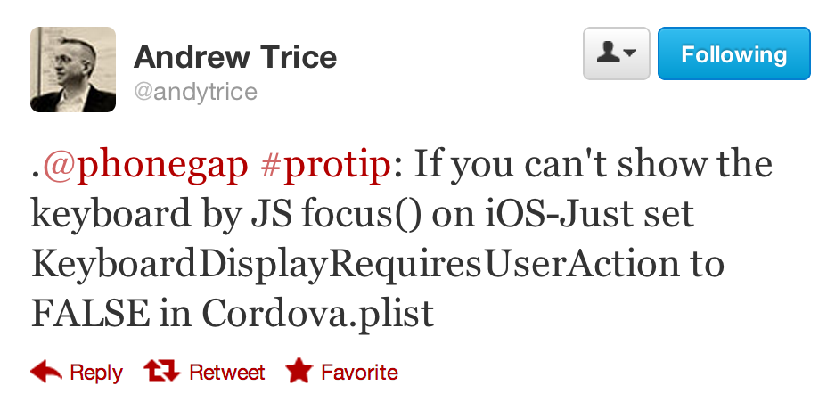

Developing with Cordova
Presented by Raymond Camden / @cfjedimaster
Do you have...
- Latest Chrome?
- A text editor of any sort?
- A web server (Apache/IIS/Node-based) (npm install -g httpster)
- An Adobe ID (so we can spam you)
- Optional But Strongly Recommended: http://developer.android.com/sdk/index.html
Grab the Bits...
https://github.com/cfjedimaster/Developing-with-Cordova
Who am I?
- Developer for Adobe
- Web Standards, HTML5, JavaScript, Mobile, ColdFusion
- Blogging at www.raymondcamden.com
- Tweeting at cfjedimaster

Who are you?
The Game Plan
- Overview of Cordova (and PhoneGap)
- Build Some Stuff!
- Talk About Some Stuff
- Bio breaks about once an hour

Genesis
- Built at an iPhoneDevCamp in 2009
- Started by Nitobi
- Adobe bought Nitobi (2011)
- Currently at 3.4.0
$$$?
- PhoneGap is free
- No, really, free
- Open Source
Apache Cordova
- cordova.apache.org
- PhoneGap is Adobe's implementation
- PhoneGap == Cordova
Let's get techy
- Creates "Hybrid" applications
- Native wrapper around a web view
- HTML (CSS,JS) handles layout
- Cordova "bridges the gap" to native capabilities
About that gap...
- Cordova tries to follow standards
- When it doesn't need to do anything, it doesn't
- In the perfect world, Cordova won't exist
Supported Platforms
- iOS
- Android
- Windows Phone 7 (deprecated), 8
- BlackBerry
- Bada
- WebOS
- Symbian
Other Platforms
- Firefox OS
- Mac OSX
- QT
- Tizen
- Ubuntu
- Windows
Features (Stuff you can do with JavaScript!)
- Accelerometer - when the device moves
- Camera - pictures of your cat
- Capture - audio, video, stills of your cat
- Compass - for when you're lost in the woods
- Connection - type of connection
Features
- Contacts - find and create new friends
- Device - device and OS version metadata
- Events - various app/hardware related events
- File - native file system access (and upload/download)
- Geolocation - for when you're lost in the woods
Features
- Globalization - date/number/currency formatting
- Media - related to audio playback (supports record as well)
- Notification - visual, audible, and tactile notifications
- Splashscreen - for your splash screen needs
Unofficial Features
- Use any of the 10 million JavaScript libraries
- Use any of the 10 million APIs
- Deploy to app store
Non-Features
- UI
- Native Killer
Who is using PhoneGap?

Real World Demo
How is it done?
- Going from HTML to Binary
- Making use of the "special" stuff
- Thinking Differently
How is it done?
- Install Node
- Install cordova via npm: sudo npm install -g cordova (Windows folks open your command prompt as an Admin)
- Get SDK(s) (technically optional)
How is it done?
- Command line init to create the project
- Switch to your editor
- Edit HTML, simulate, build (via CLI)
Demo
I'll show creating a project and explain what the folders represent.
Adding Platforms
- cordova platforms add X (to add something)
- cordova platforms (to report)
Demo
I'm going to show adding iOS and Android as well as checking what is there/installed.
Building/Emulating/Testing
- prepare
- compile
- build == prepare + compile
- emulate
- run
Demo
How do we do the awesome?
- Include cordova.js (this will NOT exist in www)
- Wait for "deviceready" event
- plugins for each feature (so to do X, you add the plugin X)
- config.xml (handles settings)
Demo
I'm going to demo the camera API and totally screw it up.
Plugins
- All core features use plugins
- Additional features use plugins
- Everything driven from CLI (list, add, and remove)
Demo
Let's fix the camera demo.
Real World Building
- Desktop Browser
- Mobile via Web
- Ripple Emulator
- Local SDK to Simulator/Device
Desktop Browser
- Pro: Super Fast
- Pro: No setup
- Pro: Debugging Rocks
- Con: UI isn't right
- Con: UX isn't right
- Con: Features missing
- Con: Security restrictions
Mobile Via Web
- Pro: Kinda Fast
- Pro: Minimal setup
- Pro: UI and UX testing
- Con: Features missing
- Con: Security restrictions
- Con:
Debugging sucks
Ripple Emulator
- Pro: Fast
- Pro: Similar UI
- Pro: Free
- Pro: Security restrictions gone
- Con: Not 100% supported
- Con: Still not on the device
Local SDK to Simulator/Device
- Pro: The Real Deal
- Con: Slow(ish)
- Con: Not Free
- Con:
Debugging *really* sucks
TO BE CLEAR: YOU MUST ALWAYS TEST ON A REAL DEVICE
Web Standards
What are we talking about?
Web standards are the formal, non-proprietary standards and other technical specifications that define and describe aspects of the World Wide Web. In recent years, the term has been more frequently associated with the trend of endorsing a set of standardized best practices for building web sites, and a philosophy of web design and development that includes those methods.
What are we REALLY talking about?
- What can HTML do?
- What can CSS do?
- What can JavaScript do?
- (and a bit more, stuff like MathML)
Why are we talking about this?
How do you find out?
- Read the specs
- Mozilla Developer Network (developer.mozilla.org)
- WebPlatform.org
- http://developers.whatwg.org/
- CanIUse.com
Testing with Ripple
Note!
If you worked with Ripple in the past and have the Chrome extension (or if you encounter it after this conference), remove it, don't use it, etc!
About Ripple
- Open source project (managed for a while by Blackberry)
- Just returning from a period of inactivity
- Set up at Apache: http://ripple.incubator.apache.org/
Install Ripple
npm install -g ripple-emulator
Using Ripple
- Write your code as normal...
- Run ripple emulate
Demo
I'll demonstrate the features.
Lab One: Geolocation
Geolocation API
- FYI - not part of HTML5
- Official Spec: http://dev.w3.org/geo/api/spec-source.html
- Prompts the user
Geolocation API
- navigator.geolocation
- getCurrentPosition
- watchPosition/clearWatch
- Options for how precise, how long to try, etc
Geolocation API: getCurrentPosition
function init() {
if(navigator.geolocation) {
navigator.geolocation.getCurrentPosition(gotLocation,errorHandler);
}
}
function gotLocation(position) {
console.dir(position);
}
function errorHandler(e) {
console.dir(e);
}
Part One
- Literally do what I just showed you
- Check the console for the result
Part Two
- Add User feedback
- Tell the user you're getting their location...
- When done, tell them their long/lat
- Bonus points for skipping jQuery
Part Three
- Google Static Map API
- Displays a simple map (no interaction)
- Docs: https://developers.google.com/maps/documentation/staticmaps/
- http://maps.googleapis.com/maps/api/staticmap?parameters
Static Map API Required Args
- center: string or lat,long
- size: widthxheight
- zoom: 0 to 21+
- sensor: set it to true
Demo
http://maps.googleapis.com/maps/api/staticmap?center=30.224089,-92.0198 &zoom=12 &size=400x400 &sensor=false
Part Three
- Simple - add the map
Part Four
- Convert this into PhoneGap/Cordova
- Make a new project (clean out the crap)
- Copy code from last part
Lab Two: Remote APIs
Remote API Examples
- Facial Recognition
- Text Analysis
- Data Storage
GitHub Search API
- URL based: https://api.github.com/search/repositories?q=X
- Spits out metadata plus array of results
- Docs: http://developer.github.com/v3/search
- Unauthenticated calls are limited to per minute!
Part One
- Prompt for search query
- Search against GitHub
- console.dir the results
What might have happened??
- Browser blocked the remote XHR
- Work arounds:
- JSON/P
- CORS
- Proxy on local server (Node, PHP, ColdFusion)
- Ripple fixes this.
- Or...
Chrome Flags
- open -a /Applications/Google\ Chrome.app --args --allow-file-access-from-files --disable-web-security
Part Two
- Display the results
User Interface / Experience
We know what doesn't work...
How do we fix it?
- Viewports
- Fat UI
- Framework
Viewport
- Defines how big the web page thinks your monitor is...
- Mobile browsers assume a large value (980) and scale down
Viewport
Viewport - Override
<meta name="viewport" content="width=320">
Viewport
Viewport - Even Better
<meta name="viewport" content="width=device-width">
Viewport - More options
- initial-scale=1
- maximum-scale and minimum-scale
- user-scalable
Fat UI
Just making things easier to hit
Lab 3 - UI
Goals
- Take the GitHub demo and add the viewport
- Then add CSS to "fatten" the inputs
Using a Framework
- Twitter Bootstrap
- jQuery Mobile
jQuery Mobile
- Enhances UI by default
- Creates widgets (lists, dialogs, etc)
- Allows for a single page app
- jquerymobile.com (v1.4.0 as of now)
Example
<!DOCTYPE html>
<html>
<head>
<title>My Page</title>
<meta name="viewport" content="width=device-width, initial-scale=1">
<link rel="stylesheet" href="http://code.jquery.com/mobile/1.2.0/jquery.mobile-1.2.0.min.css" />
<script src="http://code.jquery.com/jquery-1.8.2.min.js"></script>
<script src="http://code.jquery.com/mobile/1.2.0/jquery.mobile-1.2.0.min.js"></script>
</head>
<body>
<div data-role="page">
<div data-role="header">
<h1>My Title</h1>
</div><!-- /header -->
<div data-role="content">
<p>Hello world</p>
</div><!-- /content -->
</div><!-- /page -->
</body>
</html>
Another Example
<ul data-role="listview" data-inset="true">
<li>Item 1</li>
<li>Item 2</li>
<li>Item 3</li>
</ul>
Yet Another Example
<form>
<div data-role="fieldcontain">
<label for="name">Text Input:</label>
<input type="text" name="name" id="name" value="" />
</div>
<div data-role="fieldcontain">
<input type="submit" name="submit" value="Send" />
</div>
</form>
Lab 4 - jQuery Mobile
Goals
- Add jQuery Mobile to the GitHub Search demo
More Labs
Device API
- Read only
- global device object
- Details:
- model
- cordova
- platform
- uuid
- version
Example
document.querySelector("#status").innerHTML = device.model;
Lab Five: Device API
Goals
- Use the deviceready event
- Display on the page the device values: model, cordova, platform, uuid, version
- Reminder: cordova create X, cordova platforms add android, cordova prepare, ripple emulate
Accelerometer API
- Like Geolocation: getCurrentAcceleration, watchAcceleration, and clearWatch
- Like Geolocation: Both take a success/error handler.
- Ditto: Supports options (just frequency)
Example
navigator.accelerometer.getCurrentAcceleration(gotAcc,errHandler);
function gotAcc(acc) {
//From docs
alert('Acceleration X: ' + acceleration.x + '\n' +
'Acceleration Y: ' + acceleration.y + '\n' +
'Acceleration Z: ' + acceleration.z + '\n' +
'Timestamp: ' + acceleration.timestamp + '\n');
}
Example
wID = navigator.accelerometer.watchAcceleration(gotAcc,errHandler);
function gotAcc(acc) {
//From docs
alert('Acceleration X: ' + acceleration.x + '\n' +
'Acceleration Y: ' + acceleration.y + '\n' +
'Acceleration Z: ' + acceleration.z + '\n' +
'Timestamp: ' + acceleration.timestamp + '\n');
if(something) navigtor.accelerometer.clearWatch(wid);
}
Lab Six: Accelerometer API
Goals
- Watch for a "shake"
- Update a random number from 1-6
What happens if...
You open your PhoneGap/Cordova app offline?
Working with Offline/Online Events and the Connection API
- Your app should do *something* when offline
- "offline" and "online" are events you can listen for
- The Connection object returns one of:
- Connection.UNKNOWN
- Connection.ETHERNET
- Connection.WIFI
- Connection.CELL (and _2G and _3G and _4G)
- Connection.NONE
- navigator.connection.type
Lab Seven: Adding Network Support
Goals
- Take the GitHub demo and check Connection on startup
- Add event handlers for offline/online
Storage
- LocalStorage
- WebSQL
- File System
LocalStorage
- Web spec, not PhoneGap
- Stores key/value pairs
- Up to 5 megs
- Has a "session" version
Example
localStorage.name = "somevalue";
console.log(localStorage.name);
localStorage.setItem("name","somevalue");
console.log(localStorage.getItem("name"));
localStorage.removeItem("name"); localStorage.clear();
PhoneGap uses?
- Preferences
- Username and Password
- Search History
Lab Eight: LocalStorage
Goals
- Take the GitHub API and remember their last search
- Add a "Welcome" alert/notification for their first time
- Extra credit: Remember the last few searches and provide a UI to reselect them.
WebSQL
- Dead spec walking
- Mini database in your browser
- SQLite based
Example
//from docs
var db = window.openDatabase("test", "1.0", "Test DB", 1000000);
db.transaction(populateDB, errorCB, successCB);
function populateDB(tx) {
tx.executeSql('CREATE TABLE IF NOT EXISTS DEMO (id unique, data)');
tx.executeSql('INSERT INTO DEMO (id, data) VALUES (1, "First row")');
tx.executeSql('INSERT INTO DEMO (id, data) VALUES (2, "Second row")');
}
function errorCB(err) {
alert("Error processing SQL: "+err.code);
}
function successCB() {
alert("success!");
}
Result Set Example
function queryDB(tx) {
tx.executeSql('SELECT * FROM DEMO', [], querySuccess, errorCB);
}
function querySuccess(tx, results) {
var len = results.rows.length;
console.log("DEMO table: " + len + " rows found.");
for (var i=0; i<len; i++){
console.log("Row = " + i + " ID = " + results.rows.item(i).id + " Data = " + results.rows.item(i).data);
}
}
function errorCB(err) {
alert("Error processing SQL: "+err.code);
}
var db = window.openDatabase("Database", "1.0", "Cordova Demo", 200000);
db.transaction(queryDB, errorCB);
PhoneGap uses?
- User generated content
- Offline storage
Demo
File System
- Typical file system stuff (CRUD file+dir)
- FileTransfer (upload and download)
Example
Ok, I'm cheating, let's head to the docs!
PhoneGap Build
The 411
- Web based platform to do builds
- Supports iOS, Android, Windows Phone, Blackberry, webOS, Symbian
- Has an API too
- NO SDKS NO COMPILING NO MESS!
$$$
Walkthrough
Lab 9: PhoneGap Build
Goals
- Sign up
- Make a file, any file
- Upload it
- Winning
Some Details
- Your zip, or repo, should *not* include cordova.js
- ... but your HTML still references it
- config.xml file helps build (optional)
- plugins are still needed (see next few slides)
config.xml
- Defines various settings
- some are platform specific...
- splash screen, icons, Android permission
- Example
- This is also where you enable core features
PGB and Plugins
- Add to your config.xml: <gap:plugin name="org.apache.cordova.camera" />
- PGB page will show this
Hydration
PhoneGap CLI
- Automatic PGB support
Custom Plugins
Plugins
- Written in their native language (that follows an API)
- Ship with a JavaScript wrapper
- Include them in your project
Examples
- TTS
- Barcode scanner
- SMS
- Intents
PhoneGap Build Support
Check here: https://build.phonegap.com/plugins
Example
https://github.com/macdonst/SpeechSynthesisPlugin
Debugging
Your options
- Desktop
- Remote debugging (mobile web, Chrome/Safari)
- weinre
Remote Debugging
Demo
More on this "Thinking Different"
The Problem
- You know how to get on the device
- You know how to use additional features
- You don't know how to build a mobile app
Performance
Your Device
- It is amazing
- It is beautiful
- It let's you do this...
But it is not a desktop!
- CPU is roughly 1/4 of a desktop
- Graphics power not even close
- RAM is living in 2005
- You will not be online and if you are, it will inconsistently suck
- And of course, smaller screens
And it is... different
- click versus touch
- Chrome has a nice trick for this
Get to know the details...
More Things to Think About
- Offline/Online/Network speed/File Size
- Globalization, Translation
- Server side stuff? (Parse.com)
- Error reporting, getting feedback
Wrapping Up
Where to Go Next
- Books - "PhoneGap Mobile Application Development Cookbook"
- Google Group - https://groups.google.com/d/forum/phonegap
- Finding Jobs/People - people.phonegap.com